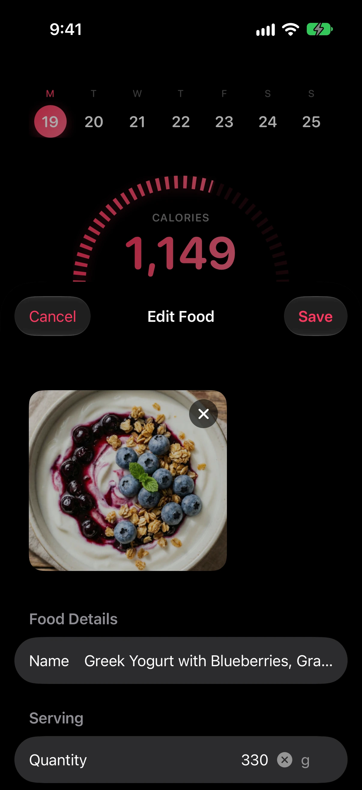
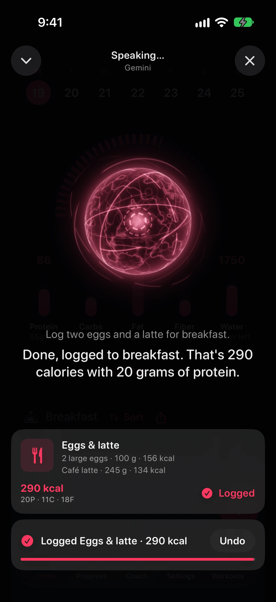
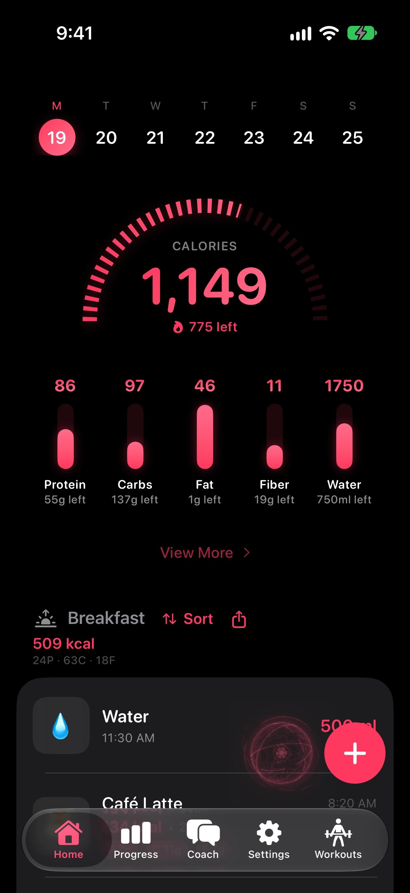
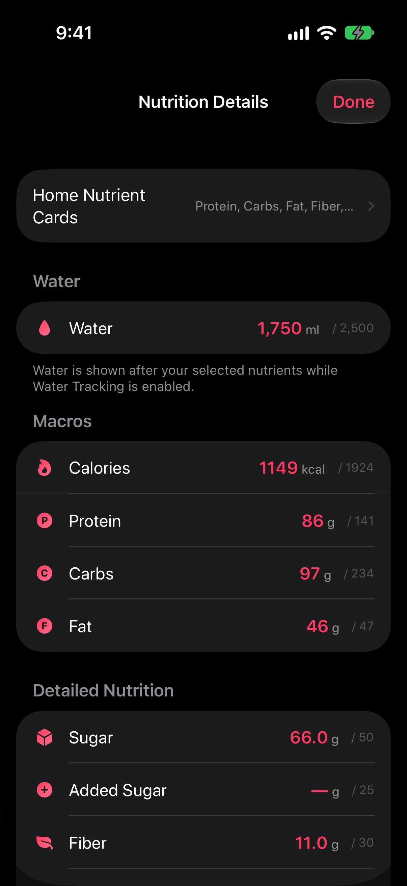
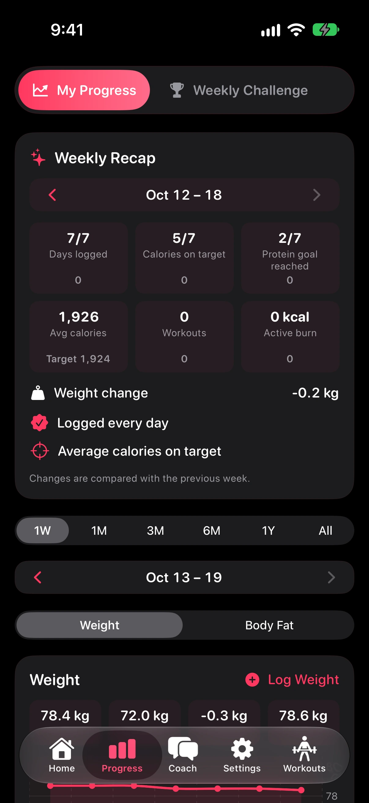
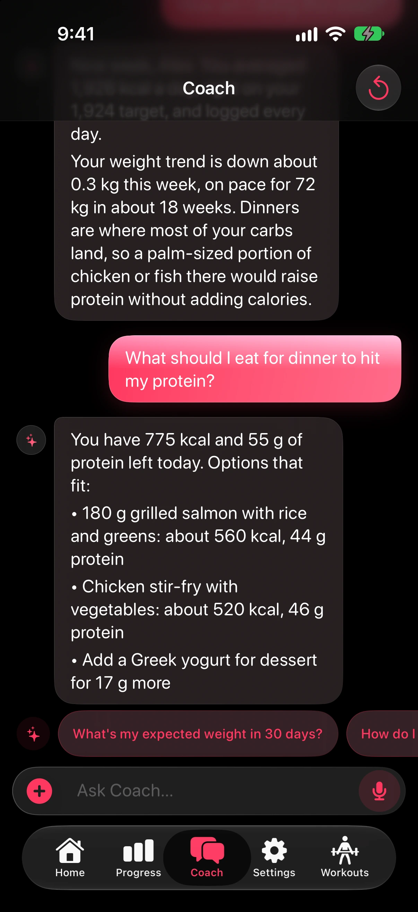
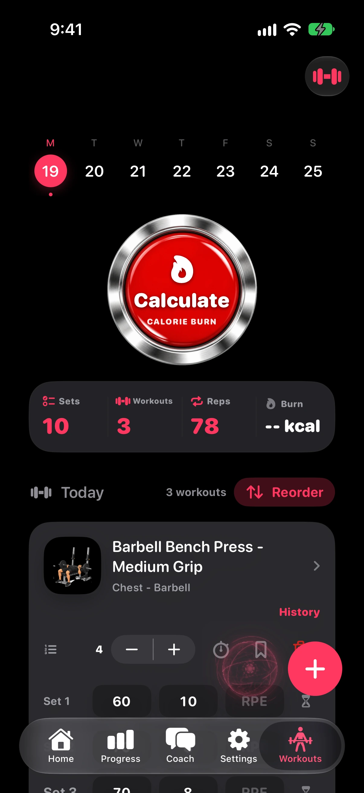
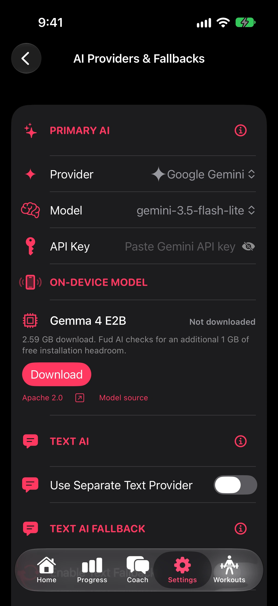
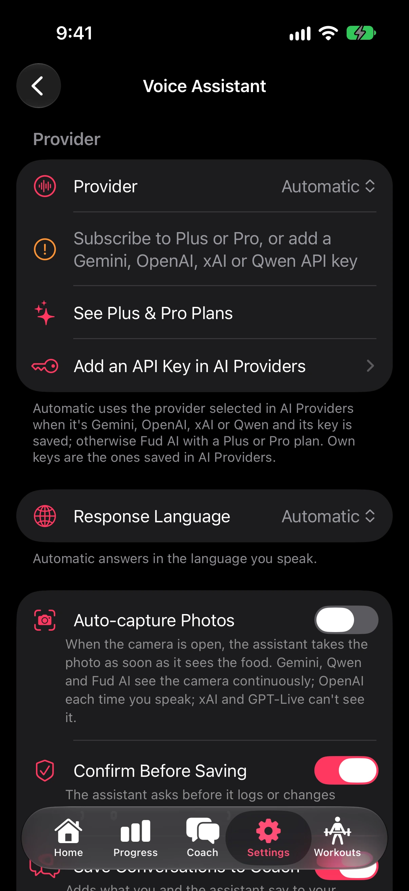

Barcode scanning
Packaged food, straight from the Open Food Facts database.
Fud AI is the free, open-source AI calorie tracker for iPhone and Android. Snap a photo, scan a barcode, type, or talk, and it logs calories, macros, and 30+ nutrients.
For example, say “Log two eggs and a latte for breakfast,” and Fud AI logs 290 calories with 20 grams of protein.

Point your camera at a meal, or pick up to 10 photos of it. Fud AI estimates calories, macros, and the nutrients most apps skip, and you check every number before it’s logged.
The ring counts down today’s calories and the pillars track protein, carbs, fat, fiber, and water. Widgets put the same numbers on your Home Screen, Lock Screen, and Apple Watch.
Ask how your week went or what to eat for dinner. Coach answers from your own meals, weight trend, and workouts, so the advice fits the day you’re actually having.
Live Voice, your day at a glance, every nutrient, weekly progress, Coach, workouts, and the keys you bring.








With your own key, a meal goes from your phone straight to the AI provider you choose. Fud AI isn’t in the middle, so there’s nothing to charge you for.
Rather not manage a key? Optional Plus and Pro plans run the AI for you on iPhone and Android. Details are in the Privacy Policy.
Works with Gemini, OpenAI, Claude, Grok, Mistral, DeepSeek, OpenRouter, Groq, Ollama, Hugging Face, Together AI, Fireworks, DeepInfra, Cerebras, and your own OpenAI-compatible endpoint.
Packaged food, straight from the Open Food Facts database.
Fud AI follows your phone’s language.
Eight themes, and the app icon changes to match.
An optional goal, one-tap glasses, and reminders.
An optional timer that keeps going when the app is closed.
Calories, protein, and water at a glance, without opening the app.
Sync nutrition, weight, and workouts, only if you turn it on.
On iPhone, log by voice from anywhere, or share a food photo in.
Log your usual in one tap, or see how a meal changes your day first.
Can’t find your answer? Join the Fud AI Discord and ask with /ask, or email apoorv@fud-ai.app.
A free, open-source AI calorie tracker for iPhone and Android. Snap a photo, scan a barcode, speak, or type a meal, and AI estimates the calories, macros, and nutrients. fud-ai.app is the official website.
Yes. The app is free with no ads, and with your own AI key there’s no subscription: a free Gemini key takes about a minute to create. If you’d rather not manage a key, optional paid Plus/Pro plans run the AI for you. An optional Tip Jar on iOS and Android helps fund development.
Fud AI is free forever with Bring Your Own Key, and a free Gemini API key takes a minute to create. Manual entry, barcode lookup, Native iOS / Native Android speech, and Ollama local inference work without any hosted AI API key. On iPhone and Android, optional Plus/Pro hosted AI is available if you prefer not to manage keys.
Yes. Fud AI can estimate nutrition from up to 10 camera or photo-library images analyzed together with an optional note, iOS Share Extension photos, text input, voice input, iOS Siri Shortcuts, saved meals, barcode lookup, and manual entries.
Yes. It tracks calories, protein, carbs, fat, sugar, fiber, saturated fat, trans fat, mono-unsaturated fat, poly-unsaturated fat, cholesterol, sodium, potassium, calcium, iron, magnesium, zinc, vitamins, folate, omega-3, and more when available.
Yes, when you turn it on. Fud AI supports Apple Health on iPhone and Health Connect on Android for body measurements, meal nutrition, and calculated workout calories. Energy Burn Goals can also use active or total energy for calorie target estimates. Fasting history stays local and isn’t synced.
Yes. Fud AI is MIT-licensed open source, has no account or Fud AI cloud-sync service, and stores your data on your device first. Operating-system backups and the AI, barcode, health, export, or sharing actions you start are described in the Privacy Policy.
Fasting tracking is off by default. After you turn it on in Settings, choose a 1–168 hour goal and start, end, or cancel a fast from the Home plus menu. The timer survives app restarts, finished fasts can be edited, and an optional local alert can fire at your goal. Fasting never changes your nutrition totals or syncs with Health.
Yes. Siri Shortcuts can log food, read today’s calories, and log weight. On supported iPhones, Siri food descriptions can use Apple Intelligence on-device as the final fallback after your own provider and fallback provider fail. Phrase examples are under + › Describe Meal › Siri Phrases.
Join the Fud AI Discord server, then use the /ask slash command from the Fud AI bot with your question. The bot replies in the channel.
Fud AI for Android installs from Google Play, so you don’t need a separate APK. It’s MIT-licensed open source, so you can also build it yourself from the GitHub repository.
Yes. Fud AI, Fud AI app, and Fud app all refer to the same open-source calorie tracker for iPhone and Android.
Free on iPhone and Android. Bring a free AI key, or start with barcodes and manual entry.
Needs iOS 17.6 or later, or Android 8.0 or later.